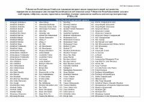

ORO'zbekistonda taqiqlangan diniy-ekstremistik materiallar va manbalarning rasmiy ro'yxati.
Ushbu hujjat O'zbekiston Respublikasi Oliy Sudi tomonidan mamlakat hududiga olib kirish, saqlash va tarqatish taqiqlangan diniy ekstremistik, terroristik va aqidaparastlik g'oyalari bilan yo'g'rilgan materiallar ro'yxatini o'z ichiga oladi. Ro'yxatda taqiqlangan kontentlar, mualliflar va internet resurslari keltirilgan.